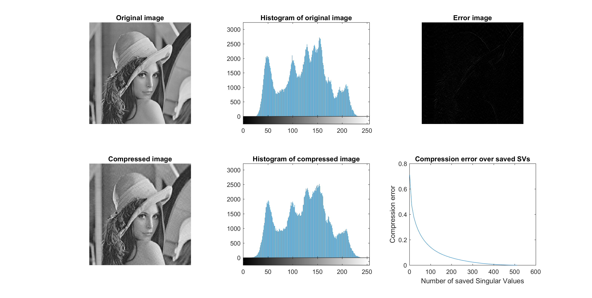

Contents
close all; clear; clc;
Compression algorithm
Lena_org = imread('lena.bmp');
Lena = double(Lena_org);
[U,S,V] = svd(Lena);
singvals = diag(S);
c = 0.01;
indices = find(singvals >= c * singvals(1));
U_red = U(:,indices);
S_red = S(indices,indices);
V_red = V(:,indices);
USV_red = U_red * S_red * V_red';
Lena_red = uint8(USV_red);
imwrite(Lena_red,'ReducedLena.bmp');
Analysis of the algorithm
m = size(Lena,1);
n = size(Lena,2);
storage = m*n;
fprintf('Size of image is %d px by %d px, i.e. uses %d px of storage.\n',m,n,storage);
r = length(singvals);
r_red = length(indices);
r_max = floor(m*n/(m+n+1));
storage_red = m*r_red + n*r_red + r_red;
fprintf('The smallest SV is chosen to be smaller than %d of the biggest SV.\n',c);
fprintf('Out of %d SVs, now only %d SVs are saved.\n',r,r_red);
fprintf('The maximum number of SVs for compression are %d SVs.\n',r_max);
fprintf('Thhe reduced storage now is %d px.\n',storage_red);
error = 1 - sum(singvals(indices))/sum(singvals);
fprintf('The made error is %d.\n',error);
errorImage = Lena_org - Lena_red;
entropy_org = entropy(Lena_org);
entropy_red = entropy(Lena_red);
Size of image is 512 px by 512 px, i.e. uses 262144 px of storage.
The smallest SV is chosen to be smaller than 1.000000e-02 of the biggest SV.
Out of 512 SVs, now only 53 SVs are saved.
The maximum number of SVs for compression are 255 SVs.
Thhe reduced storage now is 54325 px.
The made error is 2.374273e-01.
Relationship between selcted SVs and made error
numSVals = 1:10:r;
displayedError = [];
for i = numSVals
S_loop = S;
S_loop(i+1:end,:) = 0;
S_loop(:,i+1:end) = 0;
Lena_loop = U*S_loop*V';
error_loop = 1 - sum(diag(S_loop))/sum(diag(S));
displayedError = [displayedError, error_loop];
end
Figures
figure('Name','Visualizations','units','normalized','outerposition',[0 0 1 1]);
subplot(2,3,1)
imshow(uint8(Lena))
title('Original image')
subplot(2,3,2)
imhist(Lena_org);
title('Histogram of original image')
subplot(2,3,4)
imshow(uint8(Lena_red))
title('Compressed image')
subplot(2,3,5)
imhist(Lena_red);
title('Histogram of compressed image')
subplot(2,3,3)
imshow(uint8(errorImage))
title('Error image')
subplot(2,3,6)
plot(numSVals, displayedError)
xlabel('Number of saved Singular Values')
ylabel('Compression error')
title('Compression error over saved SVs')
